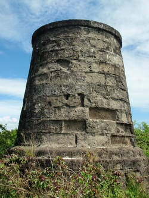
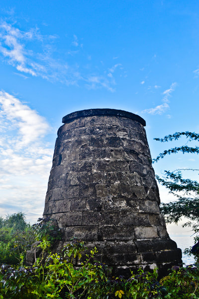
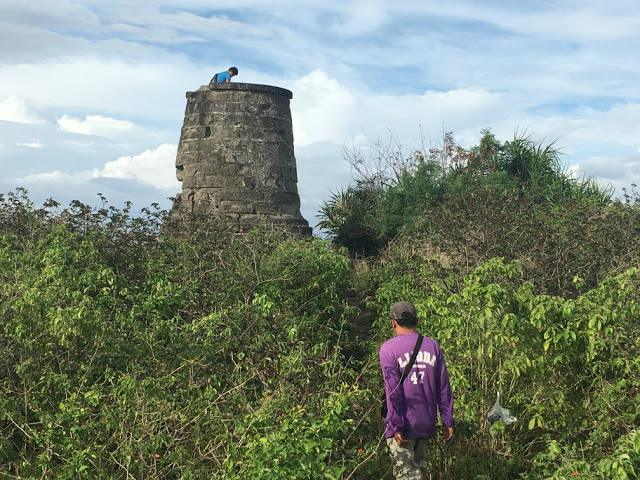
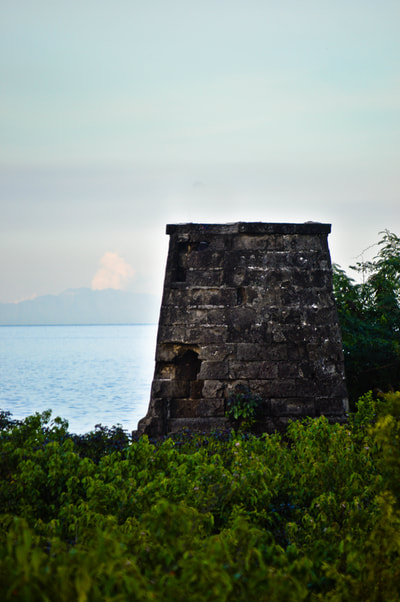
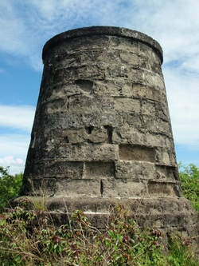
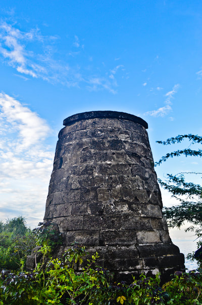
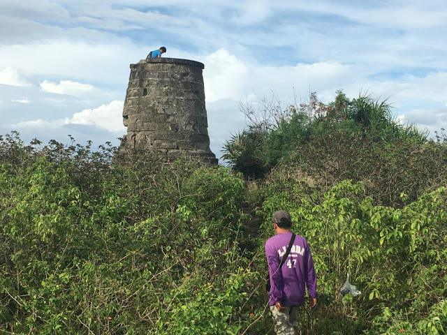
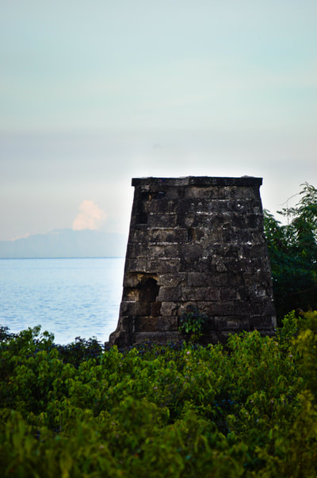

ABOUT THE PLACE
The Bantayan sa Hari in Liloan, Cebu, is a historical watchtower that dates back to the Spanish colonial period. This structure, whose name translates to "King's Watchtower," was strategically built to serve as a lookout point against pirates and other potential invaders approaching from the sea. Located along the coastline, the watchtower offers not only a glimpse into the town's rich history but also scenic views of the surrounding waters. Though modest in size, its significance as part of Liloan’s cultural heritage makes it a must-visit for history enthusiasts and those exploring the area's landmarks.